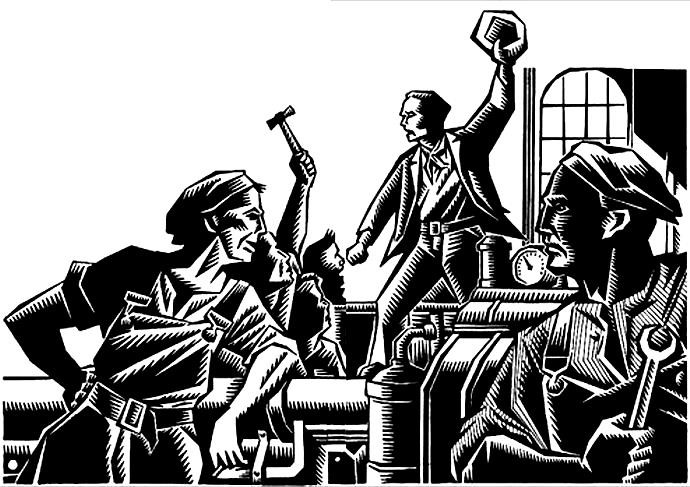

Aksi Langsung

Kasus kamerad kita di Untidar bukan bentuk aksi langsung (direct action) dan mungkin akan banyak dicibir oleh kamerad anarkis yang lain. Namun keberhasilan mereka perlu kita refleksikan untuk memperluas pandangan kita, untuk mencoba bereksperimen dengan segala macam cara dan mengangkat berbagai isu yang dirasa relevan, mendesak, dan sesuai dengan tujuan federasi. Salah satu cara
yang paling saya anjurkan, sebagaimana kamerad Willy Vebriandy, tentu saja adalah aksi langsung itu sendiri.
Saya setuju dengan Willy bahwa dalam konteks gerakan mahasiswa, sabotase dan aksi langsung cukup relevan untuk digunakan sebagai strategi perjuangan. Dikatakan relevan, karena sabotase dan aksi langsung bukanlah seperangkat teori atau ideologi yang sifatnya kaku, melainkan hanya sebuah pengetahuan mengenai strategi bagaimana suatu perjuangan dilakukan. Karena bentuknya yang hanya berupa strategi, sabotase dan aksi langsung bersifat fleksibel ketika diterapkan. Artinya ia dapat digunakan dan dapat pula tidak digunakan tergantung latar masalah yang dihadapi.
Adapun bentuk sabotase dan aksi langsung yang dapat dilakukan tentunya beragam tergantung kesadaran individu dalam menyikapi suatu persoalan. Hal ini dikarenakan fondasi dasar dari sabotase dan aksi langsung adalah kesadaran individu untuk bergerak secara spontan tanpa perantara apapun di luar dirinya. Tiap mahasiswa bebas mengekspresikan sikapnya atas suatu persoalan tanpa intervensi siapapun. Dalam konteks mahasiswa, perantara di luar dirinya ini dapat berupa BEM atau berbagai organisasi ekstra kampus.
Salah satu bentuk sabotase dan aksi langsung yang bisa dicoba gerakan mahasiswa adalah dengan meniru strategi para pekerja pabrik ketika mogok kerja. Seperti yang telah diuraikan sebelumnya, para pekerja biasanya selain melumpuhkan pabrik dengan mogok kerja, mereka juga melumpuhkan pabrik dengan merusak atau membuat mesin produksi tidak berfungsi ketika mereka sedang mogok. Strategi ini dapat dipakai dengan melakukan aksi mogok kuliah sekaligus melumpuhkan semua aktivitas yang ada di kampus. Cara melumpuhkannya ini bisa berupa mengunci semua pintu ruangan yang ada di kampus, menggembok pintu gerbang, memberi lem di lubang kunci, atau mematikan listrik dan internet di seluruh kampus dengan meretas jaringan sistem elektronik kampus. Atau yang lebih jauh lagi, mahasiswa dapat langsung mengambil alih kampus dengan menduduki gedung rektorat, fakultas, dan berbagai tempat strategis lainnya guna dijadikan tempat beraktivitas seluruh mahasiswa. Bahkan mahasiswa juga bisa membakar kampus bila memang hal itu perlu dilakukan. Berbagai tindakan ini dimaksudkan sebagai upaya untuk memaksa pihak kampus untuk menuruti kemauan mahasiswa.
Contoh demonstrasi mahasiswa Chile tahun 2011-2012 lalu dapat menjadi gambaran. Kala itu, ratusan ribu mahasiswa di Chile turun ke jalan sebagai bentuk protes atas kebijakan pemerintah terhadap dunia pendidikan. Bentuk demonstrasi yang dilakukan para mahasiswa ini tidak sekadar diisi oleh orasi politik dari para pimpinan mahasiswa. Tapi juga diisi dengan berbagai aksi kreatif, seperti flash- mob massal, aksi bersepeda mengitari kota, hingga ciuman massal sebagai bentuk protes politik. Berbagai aksi kreatif ini dapat dikatakan sebagai perwujudan aksi langsung karena tiap mahasiswa melakukan berbagai tindakan itu secara spontan tanpa perantara siapapun di luar dirinya. Begitulah bentuk demonstrasi yang dijiwai semangat sabotase dan aksi langsung, demonstrasi menjadi panggung bersama di mana semua orang berhak meluapkan segala ekspresinya.
Audiensi pun bila didasari semangat sabotase dan aksi langsung bentuknya tidak akan menjadi seperti yang saat ini terjadi. Audiensi tidak akan hanya melibatkan segelintir mahasiswa, tapi justru akan melibatkan seluruh mahasiswa. Audiensi yang biasanya tertutup dalam ruangan, akan pindah ke tempat terbuka agar seluruh mahasiswa dapat terlibat dalam dialog. Hal ini dilakukan karena tiap mahasiswa berhak menyampaikan sendiri pendapatnya tanpa perlu diwakilkan oleh orang lain. Tentunya model yang demikian jelas berbeda dengan praktik audiensi yang berkembang dewasa ini.
Sabotase dan aksi langsung dapat memberikan alternatif strategi perjuangan di tengah mainstream strategi yang selama ini hanya itu-itu saja. Ada tiga alasan kenapa gerakan mahasiswa perlu memakai sabotase dan aksi langsung sebagai strategi perjuangan. Pertama, dengan sabotase dan aksi langsung, seluruh elemen mahasiswa akan dilibatkan dalam perjuangan menyikapi suatu persoalan. Seperti yang saya uraikan di atas, ketika sabotase dan aksi langsung digunakan, tidak ada lagi pewakilan ‘nasib’ kepada segelintir mahasiswa seperti yang selama ini ada dalam mekanisme audiensi. Semua mahasiswa berhak berpendapat, bergerak, dan berjuang sesuai kehendak dirinya dalam koridor perjuangan bersama menyikapi suatu persoalan.
Kedua, sabotase dan aksi langsung membuat gerakan
mahasiswa mempunyai posisi tawar yang tinggi dihadapan musuh- musuhnya—dalam hal ini sebut saja negara atau pimpinan kampus. Kita bisa ambil contoh dalam kasus UKT. Ketika semisal pimpinan kampus tidak memenuhi tuntutan mahasiswa, mahasiswa punya posisi tawar dihadapan rektorat berupa ancaman akan terus melakukan berbagai bentuk tindak sabotase dan aksi langsung sampai tuntutan mereka dipenuhi.
Ancaman ini bisa berupa mogok kuliah yang dilakukan seluruh mahasiswa, atau pelumpuhan segala aktivitas yang ada di kampus dengan menduduki rektorat atau mengunci seluruh gerbang dan pintu yang ada di kampus. Ancaman ini tentu akan membuat posisi tawar mahasiswa menjadi seimbang dengan pihak rektorat. Ketika terjadi dialog di mana pimpinan kampus menolak tuntutan mahasiswa, pihak mahasiswa bisa dengan santai mengatakan, “Kalo kalian (rektorat) gak mau ngikutin mau kita, ya udah kita akan mogok kuliah dan dudukin seluruh kampus.” Perkataan demikian dapat terlontar apabila gerakan mahasiswa memiliki posisi tawar yang sepadan di hadapan rektorat.
Fenomena yang selama ini terjadi di kebanyakan kampus, ketika misal pimpinan kampus tidak memenuhi tuntutan mahasiswa, biasanya gerakan mahasiswa akan bingung menyikapinya. Kebingungan ini yang nantinya berujung pada sikap menerima begitu saja fakta bahwa tuntutannya tidak terpenuhi. Gerakan mahasiswa seperti tidak punya kekuatan menekan pihak rektorat untuk memenuhi tuntutannya. Kondisi demikian dapat diatasi bila gerakan mahasiswa punya senjata untuk menekan pihak kampus, dan salah satu senjata yang dapat dipakai adalah sabotase dan aksi langsung dalam berbagai bentuknya.
Ketiga, dengan sabotase dan aksi langsung membuat gerakan mahasiswa tidak menjadi gerakan yang mengemis kepada penguasa.
Ketika semisal tuntutan gerakan mahasiswa terhadap UKT tidak dipenuhi, gerakan mahasiswa tidak akan meratapi fakta bahwa tuntutannya tidak terpenuhi. Tapi justru akan terus melakukan berbagai tindakan yang nantinya akan memaksa tuntutannya agar dipenuhi. Semisal, dalam konteks masalah nasional. Ketika gerakan mahasiswa menuntut negara untuk menggratiskan biaya pendidikan dari SD hingga perguruan tinggi dan tuntutan tersebut ditolak. Gerakan mahasiswa tidak akan mengeluh, pasrah meratapi nasib dan menerima begitu saja logika negara. Gerakan mahasiswa justru akan terus melakukan upaya perlawanan agar tuntutannya tercapai. Upaya ini bisa berupa mogok belajar nasional, pendudukan seluruh institusi pendidikan, atau pelumpuhan sarana ekonomi di seluruh Indonesia.
Bila dikontekskan dengan berbagai norma yang berlaku di Indonesia secara umum, dan di kampus secara khusus, sabotase dan aksi langsung umumnya akan dianggap sebagai perilaku amoral, pembuat kacau, atau reaksioner oleh berbagai pihak. Sabotase dan aksi langsung akan dilihat menggunakan standar baik dan buruk, bukan standar bermanfaat atau tidak. Berkembangnya persepsi ini adalah sesuatu yang wajar karena arus informasi mengenai sabotase dan aksi langsung di Indonesia tidak berjalan dengan baik. Hanya saja, daripada energi kita habis memikirkan sisi baik dan buruk dari sabotase dan aksi langsung, lebih baik kita mencoba memikirkan kemanfaatan sabotase dan aksi langsung bagi keberlangsungan gerakan selanjutnya.
Sebab bagaimanapun juga, “kalau kita terus- terusan hanya melakukan hal-hal yang boleh dilakukan, maka kita tidak akan pernah bisa mencapai apapun,” ujar Emile Pouget.
Pemogokan Umum
Gerak juang kita nampak sangat kompromis, juga sangat evolusioner, sangat bertahap dan lambat. Tetapi mau bagaimana lagi? Saya tanya, hal paling realistis apa yang bisa kita lakukan saat ini? Membeli AK-47 dan memulai pemberontakan? Malah akan ditertawai kita nanti. Kita tidak akan menampik bahwa pertempuran akan terjadi, kelak.
Sehingga krisis-krisis finansial, peningkatan harga-harga dan kelaparan, ketiadaan lapangan pekerjaan, menjadi bukti kerakusan kapitalisme yang bisa hancur sewaktu-waktu akibat perbuatannya sendiri. Namun, menunggu kapitalisme hancur dengan sendirinya saja berarti kita sudah kalah. Karena kita tidak dapat menciptakan kesempatan, dan terbukti dari banyak pemberontakan dan revolusi yang direncanakan selalu gagal, maka kita harus mempersiapkan diri dan mengambil setiap kesempatan yang ada untuk sebuah revolusi. Membangun kekuatan dan mengambil momentum.
Kita harus cerdas membaca momentum, apakah ini saat yang tepat saat revolusi? Jika ya, maka tidak ada alasan untuk tidak memulai atau mengikuti pemogokan umum (general strike) yang dimulai kelas pekerja.
Petani-petani perlu diyakinkan untuk memberikan solidaritas berupa logistik, karena berdasarkan pelajaran sejarah, mereka berperan penting untuk mencegah revolusi yang di luar kendali akibat penjarahan karena krisis pangan. Sementara mahasiswa, akan berperan penting dalam barikade dan pertempuran jalanan bersama rakyat miskin lainnya.
Pertempuran jalanan akan dimulai hanya ketika tentara dan polisi menggunakan kekerasan. Jika tidak, saya tetap setuju dengan cara-cara damai dalam
" Kapitalis tidak akan menyerahkan kekayaannya secara sukarela, sebagaimana pejabat negara tidak akan menyerahkan kekuasaannya begitu saja. "
upaya merebut alat produksi dan membentuk swa-pemerintahan rakyat. Tetapi saya kira, pertempuran jalanan tetap tidak akan terelakan, sebab kapitalis tidak akan menyerahkan kekayaannya secara sukarela, sebagaimana pejabat negara tidak akan menyerahkan kekuasaannya begitu saja.
Bagaimana dengan rekan komunis? Hingga batas-batas tertentu, membentuk kerjasama dan solidaritas dengan mereka adalah baik, terutama jika revolusi tidak mungkin diwujudkan dalam waktu dekat.
Tapi percayalah, penyatuan kelompok kiri (unifikasi) adalah mustahil. Kelompok sosialis otoritarian akan memanfaatkan setiap kesempatan yang ada untuk merebut, lalu mempertahankan kekuasaan. Tidak susah bagi kita untuk mengambil pelajaran dari pengkhianatan mereka dalam berbagai pemberontakan dan revolusi.
Kita dibujuk untuk mendukung kekuasaan mereka, menggandaikan prinsip-prinsip kita, lalu disingkirkan saat mereka sudah mapan. Tetapi bagaimanapun, mereka tetaplah saudara kita sebagai sesama manusia yang punya tujuan-tujuan mulia. Perdebatan yang sehat harus digencarkan ketimbang hanya caci maki dan permusuhan.
Jika tidak, saat revolusi terjadi dan mereka menunjukan tanda-tanda pengkhianatan, mereka harus diberi pelajaran. Kepala mereka harus dipukul pentungan karena kebodohannya.